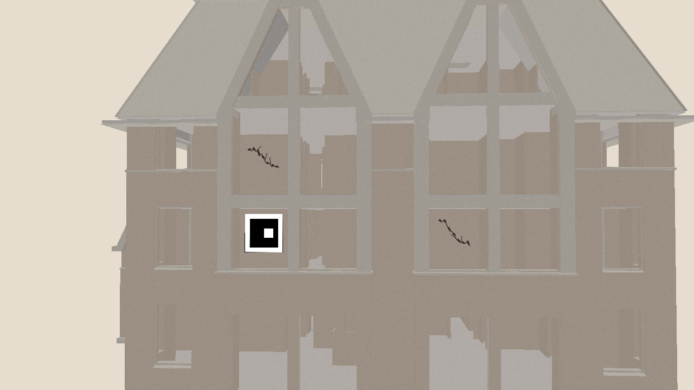
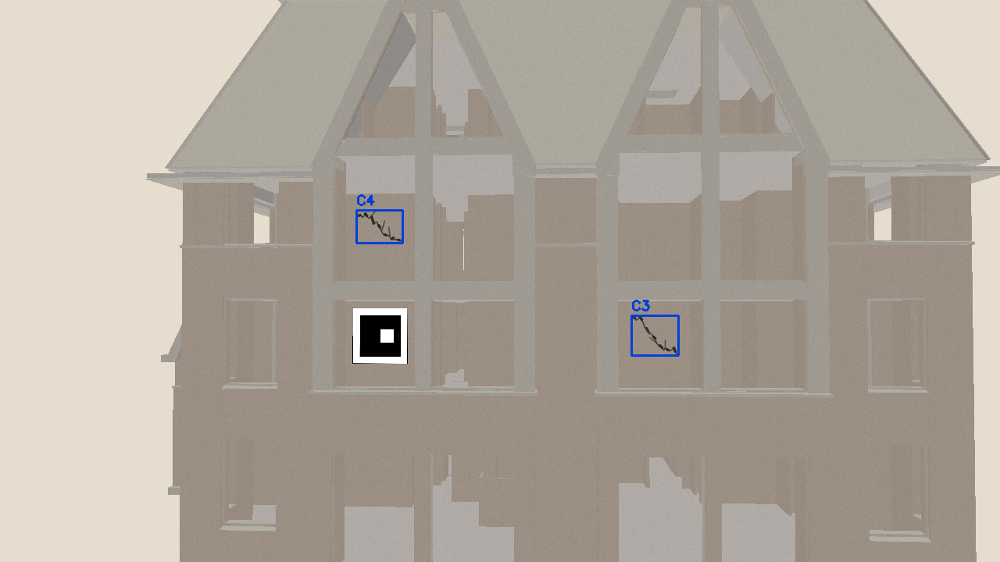
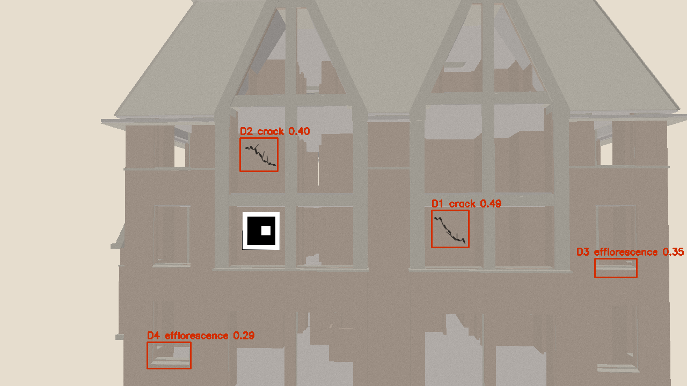
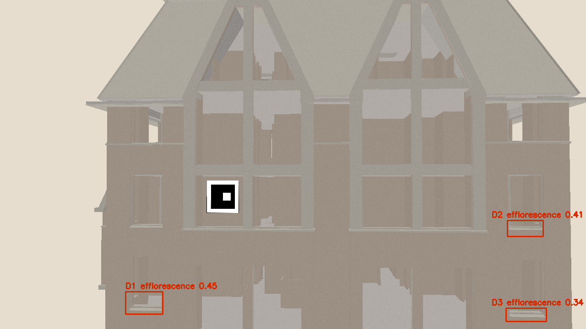
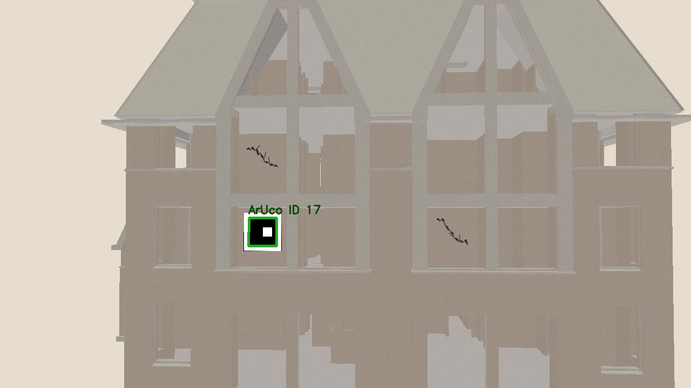
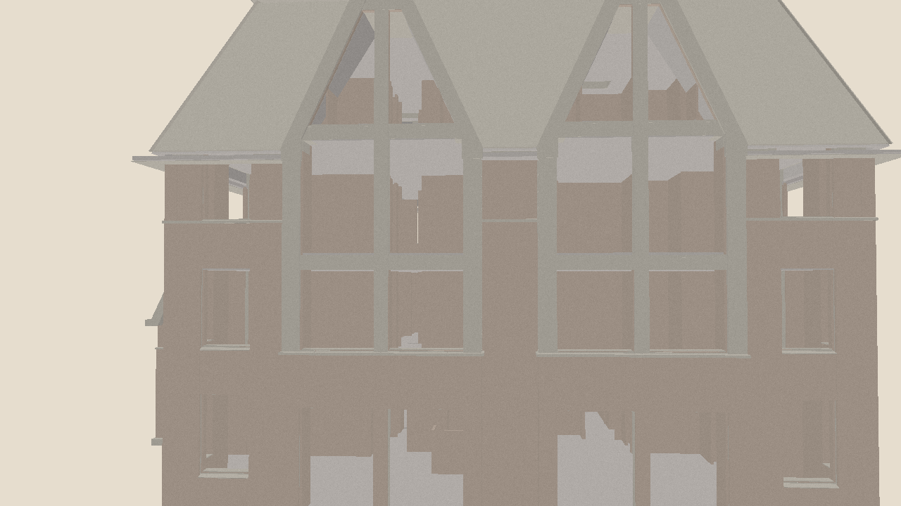
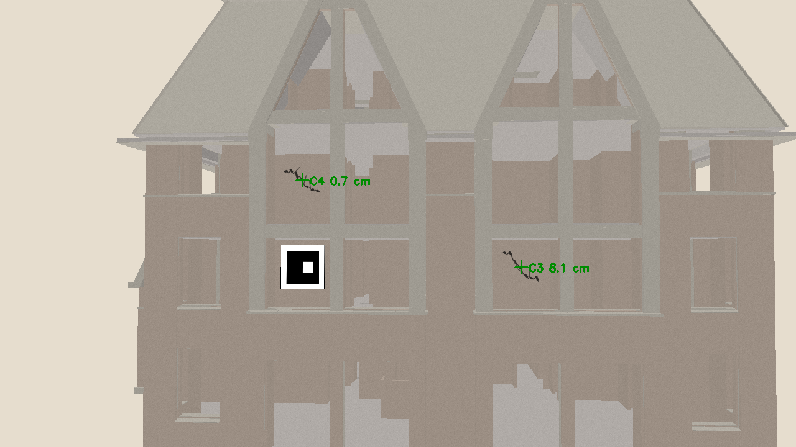
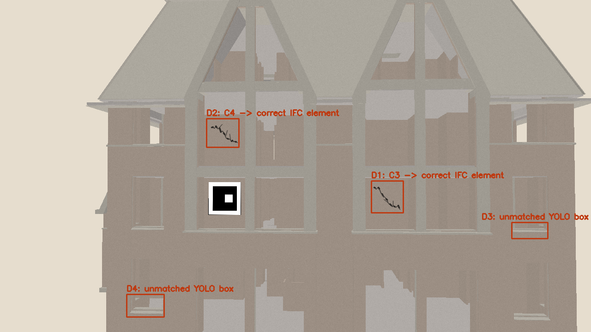

DefectSync simulation record
Controlled software experiment on the uploaded Schependomlaan IFC. The scene uses structural IFC meshes
with synthetic surface textures. It represents separate detection and BIM mapping contributions.
- Detection
- 2/2 class-correct box matches, 2 unmatched positive-frame predictions,
3 clean-frame predictions. Missed IDs: none.
- Mapping given reference pixels
- 2/2 correct IFC element assignments.
4.35 cm mean and 8.06 cm maximum over 2 mapped points.
- Combined detector to BIM
- 2/2 detected and assigned to the expected IFC element.
Reference cracks in this demonstration: C3, C4. Two detections in one selected scene do not establish general detection accuracy.
Raw results and provenance · Mapping measurements CSV ·
Missing-marker input · Execution log
Virtual camera and IFC
A fixed virtual camera renders the Schependomlaan IFC with one ArUco marker and 2 rendered cracks. Selected reference cracks: C3, C4. The renderer records each crack's IFC element and 3D position.

Part 1 | Detection ground truth
Blue boxes are the known crack annotations. These labels are held out from the detector. Run the bundled YOLO checkpoint at confidence 0.25. Score class-correct matches at IoU 0.50.

Part 1 | Actual YOLO output
4 predictions on the positive frame. 2 matched, 2 unmatched, 0 missed. Red boxes show actual detector outputs. An unmatched prediction can be a localization or class error.

Part 1 | Clean control
The same view and marker without rendered cracks produced 3 YOLO predictions. The clean control checks whether the scene or marker itself triggers a false alarm.

Part 2 | Single-marker calibration
ID 17 decoded. Reprojection error 0.068 px. Recovered camera position differs by 51.44 cm. The marker's registered square side is 1.143 m.

Part 2 | Missing-marker control
Calibration rejected the same view with the virtual marker removed. This control uses the same camera, geometry and registered marker information.

Part 2 | Scored BIM mapping
2 of 2 known crack pixels mapped to the expected IFC element. 4.35 cm mean and 8.06 cm maximum. Each label gives the 3D distance from the mapped intersection to the reference point.

| Crack | IFC type | Expected GUID | Mapped GUID | Correct | Error (cm) |
|---|
| C3 | IfcWall | 3U4osC1p5EqwcBW8F2DJ6K | 3U4osC1p5EqwcBW8F2DJ6K | True | 8.06 |
| C4 | IfcWallStandardCase | 05yuQkJxb22el7nxTgecJc | 05yuQkJxb22el7nxTgecJc | True | 0.65 |
Combined result | Actual detection to BIM
2 of 2 reference cracks passed both detection and correct IFC element assignment. Every YOLO box was also passed to the mapper. The report separates matched cracks and unmatched boxes.

| Output | Class | Confidence | Best available IoU | Matched crack | Mapped GUID | Correct element | 3D error (cm) |
|---|
| D1 | crack | 0.493 | 0.643 | C3 | 3U4osC1p5EqwcBW8F2DJ6K | True | 11.35 |
| D2 | crack | 0.397 | 0.571 | C4 | 05yuQkJxb22el7nxTgecJc | True | 10.36 |
| D3 | efflorescence | 0.352 | 0.000 | — | 14XsuvhErDaQe9Ghiv9NHI | — | — |
| D4 | efflorescence | 0.292 | 0.000 | — | 1dcl_KEgvBzg2V0ywDT44c | — | — |
Method and scope
The fixed virtual pinhole camera uses a 1280 × 720 image, a 57° horizontal field of view and zero distortion.
The depth buffer gives reference world positions in metres and the visible IFC GlobalId for each sampled pixel.
The production OpenCV calibration receives just the frame, FOV and registered marker geometry.
The renderer's true pose is held back for scoring. The production mapper uses the recovered pose and the
candidate IFC meshes to raycast the input pixels.
Part 1 matches actual YOLO boxes to unused crack annotations in descending confidence order with class and IoU checks.
Part 2 supplies the known crack locations independently. The combined result supplies actual YOLO box centres.
When a YOLO box fails the matching rule, its mapped GUID is still recorded, but correctness cannot be attributed to a reference crack.
One simulated viewpoint and the shown crack samples are a small software experiment. This run does not establish field detection accuracy,
coverage of all defect classes, live RTSP behaviour, or accuracy with physical lens distortion and installation tolerances.
The MP4 is a captioned walkthrough assembled from the saved experiment frames.